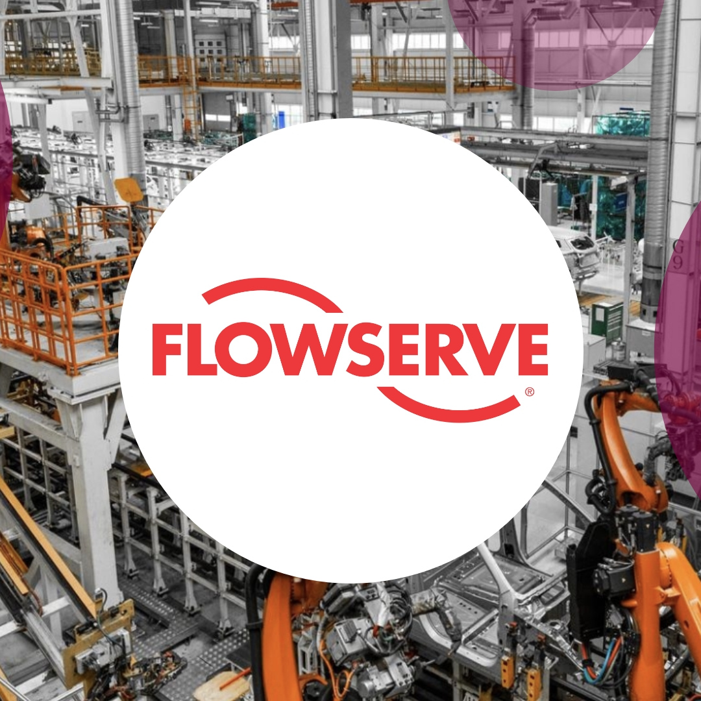

FFlowserve Corporation · Kalamazoo, Michigan
Supply Chain Intern
Power BI Reporting: Developed two Power BI solutions for supply-chain operations: an operational performance report that provides visibility into priorities, trends, and exceptions, and an inventory-adjustment report that helps teams review adjustment activity and focus follow-up efforts. Designed reports with KPI summaries, trend analysis, category comparisons, filters, and record-level detail.
Workflow Automation: Co-developed an AI-enabled requisition automation workflow using Python, Power Automate, batch scripting, and AI-assisted validation. Helped map manual process steps, validate requirements with stakeholders, and improve workflow consistency, reducing repetitive processing time by approximately 75 minutes per day.
Excel VBA Reporting: Repaired and enhanced an Excel VBA reporting tool used to organize purchasing-exception information. Improved business-rule logic and created flexible filtered outputs across relevant business dimensions, helping users prepare structured information for review, system updates, and supplier follow-up.
Purchasing Operations & Stakeholder Support: Support daily purchasing operations through purchase-order creation, SAP and Excel analysis, and coordination with internal stakeholders. Collaborate with buyers, planners, and operations teams to understand workflow needs, validate reporting logic, refine tools, and identify process improvements.